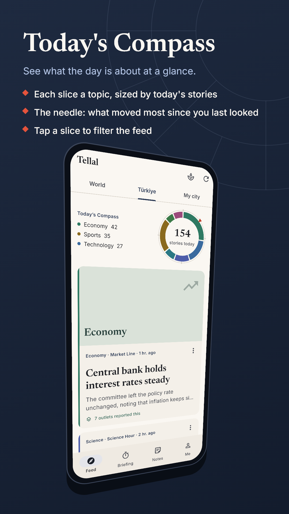
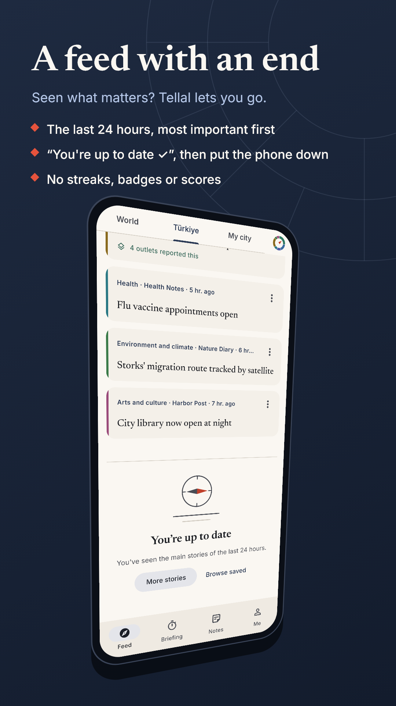
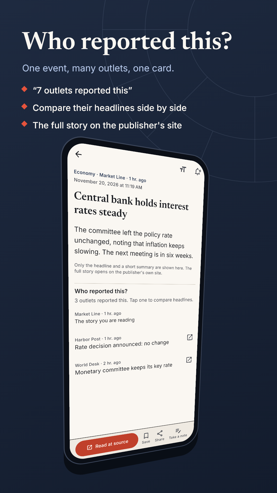

The feed ends. You're up to date.
Tellal gathers the news of the world, your country and your city in one place, shows what matters and then stops. No account, no ads, no tracking.
- Today's Compass: how much news there is on each topic today; the needle shows what moved most since you last looked.
- A feed with an end: the last 24 hours, most important first; then “You're up to date ✓”.
- Who reported this? Outlets covering the same event in one card, headlines side by side.
- Your city's crier: weather, prayer times and official announcements from your municipality.
- Privacy: what you read stays on your phone; even translation happens there.


